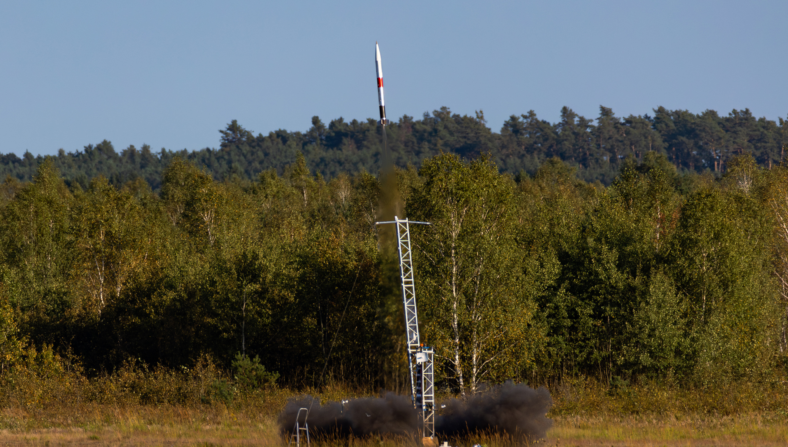

My Projects
Hamownia E
Hamownia E is the primary measurement system for the TWR 2 rocket. The system is designed to provide a user-friendly interface for a broad range of measurement applications while also offering remote activation functionality. This enables the mechanic team to conduct temperature, pressure, and mass measurements as well as actuator and pyro control at a safe distance from the test stand.

FAVE
FAVE is a part of my engineering thesis. When I was choosing my thesis topic I wanted to learn something new, so I chose fluid simulation. It is a C/OpenGL program that simulates grid based fluid environemtnt. As a visualization algorithm I chose marching cubes as it was one of the most intreresting algorithms for me. This created a nice, approximated surface for my simulation.


Twardowsky 2
Twardowsky 2 to kolejna odsłona projektu rakietowego realizowanego w ramach Studenckiego Koła Astronautycznego. Bazując na doświadczeniu zdobytym przy Twardowsky 1 — pierwszej rakiecie z napędem hybrydowym, która została skutecznie wystrzelona — TWR 2 rozwija systemy elektroniki pokładowej, aerodynamiki oraz systemy naziemne, w tym Hamownię E. Projekt łączy wiele dziedzin inżynierii i jest platformą do testów innowacyjnych rozwiązań.



FOK
FOK to projekt rakiety sondującej opracowywany w Studenckim Kole Astronautycznym. Moim zadaniem było rozwijanie systemu kamer pokładowych oraz komputera pokładowego o nazwie Ganymede wraz z procesorem STM32 oraz systemem RTOS, który współpracuje z zaawansowanym modułem inercyjnym VectorNav. System odpowiada za zbieranie danych telemetrycznych i umożliwia rejestrację lotu w czasie rzeczywistym.


Crust Engine
Crust Engine to w pełni funkcjonalny silnik 3D napisany w C++ z wykorzystaniem wielu bibliotek graficznych oraz biblioteki Eigen, stworzony z myślą o nauce podstaw grafiki komputerowej i renderowania perspektywicznego. Obsługuje pliki .obj, umożliwia tworzenie prostych gier oraz implementuje wiele klasycznych algorytmów grafiki 3D. Projekt był okazją do poznania fundamentów silników graficznych oraz zrozumienia działania pipeline’u renderującego.


Guseppe
Projekt realizowany dla strony Guseppe jako część kampanii marketingowej. Współtworzyłem interaktywną grę przeglądarkową, która angażowała użytkowników. Poza tym zajmowałem się utrzymaniem strony, wdrażaniem nowych funkcji w ReactJS oraz dbaniem o płynność działania aplikacji.


Beer Me
Beer Me to aplikacja mobilna, która umożliwia skanowanie piwa na podstawie jego zdjęcia i wyświetlanie jego charakterystyki. Użytkownik może zapisywać, komentować oraz oceniać różne piwa. Projekt wymagał stworzenia własnej bazy danych, modelu detekcji zdjęć oraz zaprojektowania pełnej architektury aplikacji. Backend został stworzony w Spring Boot, frontend w Flutterze, a do testów uruchomiono własny serwer linuksowy z dostępem przez ZeroTier.


Fumbo
Fumbo to przygodowa gra 2D stworzona w Unity/C#, w której gracz wciela się w postać ratującą uwięzione stworzenia. Gra opiera się na eksploracji i rozwiązywaniu zagadek. W projekcie pracowałem w małym zespole, implementując wiele funkcjonalności oraz elementów interakcji, co pozwoliło mi rozwinąć umiejętności pracy zespołowej i projektowania gameplay’u.


Decode!
Decode! to prosta gra symulacyjna napisana w Pythonie, w której gracz unika czarnych bloków i niszczy je przy pomocy bomb. Projekt powstał jako eksperyment z tworzeniem gier mobilnych i ich publikacją w sklepach Google Play i App Store, co dało mi praktyczne doświadczenie z procesem wydawniczym.


Augmented Reallity Campagin
Projekt zrealizowany na potrzeby kampanii reklamowej klienta z wykorzystaniem rozszerzonej rzeczywistości (AR). Aplikacja została zaprezentowana podczas targów i umożliwiała interakcję z produktami poprzez AR, co znacznie zwiększyło zaangażowanie odwiedzających. Był to projekt łączący elementy marketingu, UX i technologii mobilnych.


Arena Clicker
Arena Clicker to gra mobilna typu clicker stworzona w Pythonie, w której gracz pokonuje potwory, rozwija swoją postać i zdobywa doświadczenie w kolejnych arenach. Gra została opublikowana publicznie w sklepie Google Play/App Store i była okazją do nauki projektowania gier progresywnych oraz systemu rozwoju postaci.


Pong
Klasyczna gra Pong odtworzona w języku Swift i opublikowana w App Store/Google Play. Projekt miał charakter edukacyjny — był pierwszym krokiem w świat mobilnych aplikacji i umożliwił zapoznanie się z ekosystemem iOS oraz procesem wdrażania aplikacji.